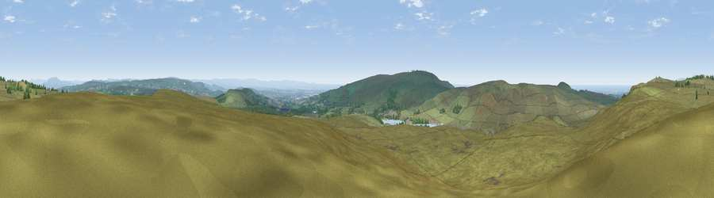

Viewpoint near Belmont
#9010 in England · top 17% of its area beats it · near Belmont · open accessWhere it is
The exact computed spot (SD 68025 18238). Click the marker for map links.
Public access: this spot lies on mapped open-access land (CRoW Act 2000) — you may roam here on foot. Computed from Natural England's CRoW access layer and OpenStreetMap rights of way — not the legal definitive map. Always verify locally.
The view, rendered

A 360° render of this exact spot computed from the terrain model, tree cover and land cover — summer colours, afternoon light, calibrated against photographs of famous viewpoints. Real trees, hedges and buildings will differ in detail.
The panorama
Grey silhouette: terrain skyline in each direction (720 bearings, Earth curvature and refraction included). Dashed green: skyline with trees (+15 m) and buildings (+8 m) as obstacles. Blue strip: how far the ground is visible on each bearing.
Where the view opens
Wedge length = distance to the farthest visible ground on that bearing (vegetation-aware). Rings at 10, 25 and 50 km.
What fills the view
90% grassland · 5% woodland · 2% built-up · 1% shrubland ·
Angular shares of the visible panorama (visual magnitude), not map area. Landscape diversity 0.19 (0–1 Shannon).
Key numbers
More beautiful places nearby
The staircase of upgrades: each row has a higher view potential than everything closer. Driving times are estimates from straight-line distance, calibrated against real road routing — check an actual route before setting out.
| Place | Direction | Drive | Score |
|---|---|---|---|
| Cartridge Hill | NNW · 2 km | ~5 min | 71.8 |
| Viewpoint near Darwen | N · 3 km | ~7 min | 72.7 |
| Darwen Hill | N · 3 km | ~8 min | 80.7 |
| Rivington Pike | SW · 6 km | ~13 min | 81.9 |
| White Brow | SSW · 6 km | ~13 min | 82.9 |
| Warton Crag | NNW · 58 km | ~80 min | 83.2 |
| Viewpoint near Grange-over-Sands | NNW · 66 km | ~89 min | 83.4 |
| Viewpoint near Cartmel | NNW · 69 km | ~92 min | 87.0 |
53.65964, -2.48532 · source: screening · position refined by local search. Computed location — check access rights before visiting.